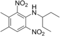

pendimethalin

Definition: Pendimethalin is an herbicide of the dinitroaniline class used in premergence and postemergence applications to control annual grasses and certain broadleaf weeds. It inhibits cell division and cell elongation. Pendimethalin is listed in the K1-group according to the Herbicide Resistance Action Committee (HRAC) classification and is approved in Europe, North America, South America, Africa, Asia and Oceania for different crops including cereals (wheat, barley, rye, triticale), corn, soybeans, rice, potato, legumes, fruits, vegetables, nuts as well as lawns and ornamental plants.
Source: Wikipedia
Wikipedia Page
Wikidata Page